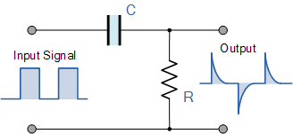

§ 2.5.5 Oscillator
In this section we show that our model quacks like a duck.
The simplest oscillators comprise only a resistor and a capacitor. Beause the capacitor ”stores” the charges, the output signal is different from the input signal (the circuit ”forms” the signal). Their behavior can be described by mathematical equations, as given in Table 2.1. Notice that the two discrete elements are connected at one of their ends, leaving only two options how to connect the input an output signals to them. Correspondingly, we can produce a parallel or a serial connection.
| The RC Integrator | The RC differentiator |
| Low Pass Filter | High Pass Filter |
![[Uncaptioned image]](fig/rc-rc12Integrator.gif) |
 |
![[Uncaptioned image]](fig/rcDifferentiator.jpg) |
It may have different reasons why a current appears with a delay compared to the voltage, such as: the charge carriers of the current have finite speed, or, although they have infinitely high speed, they are stored for some reason for some time and released only some time later (as the conditions within the circuit change). In a limited way, we can imitate one effect with the other. Electronics uses the abstraction that circuits are composed of point-like discrete elements implementing abstract features such as resistance and capacitance, and they are connected with abstracted ideal wires, with no resistance. Given the lack of mathematics describing ”slow” currents, it is usual to imitate a neuronal circuit with a simple electric circuit having capacity and resistance . In that picture, the electric behavior can be described by summing the resistance and capacitance to single discrete components, i.e., we can use the formulas taken from electronics.
These ideal discrete elements can be connected in two ways, and those combinations have drastically different behavior, as their differential equations and waveforms show; see table from the electric tutorial. The two circuits comprise the same electric components, but wired in a different way: they form a serial and a parallel circuit, respectively. The serial circuit is a passive differentiator circuit: ”the input is connected to a capacitor while the output voltage is taken from across a resistance” and it is not to be mismatched with the parallel passive integrator circuit where ”the input is connected to a resistance while the output voltage is taken from across a capacitor”. One of the most vital differences between those circuits (see also the figures in Table 2.1 and in https://www.electronics-tutorials.ws/rc) that their output is defined by the time integral of the input voltage (or current) or by its time derivative.
Although the two oscillators have the same time constant , they form the input signal entirely differently. From the figures showing the generated signal forms, one sees that in the case of the differentiator, the input signal’s rising edge generates a positive output voltage, and the falling edge generates a negative voltage, in resemblance with the action potential. By replacing the input square wave current with a physically plausible input current function, we have good hopes to reproduce the AP voltage on the output of the circuit.
From a biological point of view, the differentiator can produce output voltage that differs from the input voltage in its sign, while the integrator cannot. The differentiator can produce output voltage that differs from the input voltage in its sign, while the integrator cannot. No additional currents and sophisticated control mechanisms are needed to describe the action potential with a differentiator-type neuronal circuit: it is a natural consequence of the interplay of the finite speed of the ”slow” ionic current and the finite size of the neuronal membrane (see section 3.4.3). The shape of the output waveform depends on the pulse width ratio to the time constant. When is much larger than the pulse width, the output waveform resembles the input signal, even in the case of the square wave input.
If we use chained electric circuits, such as in multi-compartment membrane models [33, 78], the second circuit receives the output voltage of the first circuit at a later time, and so on. The system can be described by a system of equations similar to the one describing the single-compartment system, but they are valid at different times. Handling the many equipotential compartments attempts to cover the fact that one imitates finite membrane size and slow currents.
The Differentiator is a High Pass Filter type of circuit that can convert a square wave input signal into high frequency spikes at its output (For non-square wave input, the spikes get smeared). When the capacitor is fully charged the output voltage across the resistor is zero. The arrival of the falling edge of the input waveform (whether square-wave or other type of falling edge) causes the capacitor to reverse its current giving a negative output contribution, and the output spike changes from a positive value to a negative value, purely because it is a derivative. From the point of view of laws of motion (see section 2.4.4): the differentiator is the circuit, which can be described by the biological laws of motion, namely by Eq.(2.8).
As discused in section 1.6.1, we divide neuronal operation (generating an Action Potential) into stages. We have different physical models in the different stages of operation. We have changed the fake integrator-type circuit (see section 3.5.5) to the correct differentiator-type one; eliminated the fake current; derived the neuronal AP from the first principles of science, eliminating the empirical functions. These changes mean that we need an entirely new mathematical formalism to discuss neuronal operations. Discussions about Green’s function, Fourier series, and similar stuff need revisiting: they target the wrong model.
Integrator-type oscillator
As discussed in section 3.1.3, although the notion of AIS was already known at the time when HH [10] published their Nobel-prize winner suggestions, its role was not known. The circuits were well-known electric elements with established theory. As detailed in section 3.5, the misinterpretation of some experimental facts mislead them and they chose the wrong type of circuit (see Table 2.1). Their equations and conclusion are based on the integrator type circuit. They said, ’The first step in our analysis is to divide the total membrane current into a capacity current and an ionic current’. Their Eq.(1) is
| (2.33) |
In their picture, those currents control the operation of the neuronal membrane. The basic issue with their idea (see our discussion at Eq. (2.35) is that the output voltage (aka AP) is
( can be interpreted given that the two discrete elements are switched in parallel). It implies that to produce an output voltage (see the output line shapes in Table 2.1) that first rises, after peaking, goes negative, then returns to zero, must contain a strongly negative time-depending term which is synchronized to the other currents. To produce such a term, HH [10] used a circuit where the resistances/conductances change according to some empirical function (i.e, an ad-hoc function, without science base). In other words, some mystic power must regulate the conductance of the elements, to make them behave as we know from another discipline, the theory of electricity. Starting form a wrong point (having a bad model in mind) it is simply not possible to arrive at a reasonable description. HH (and their followers) had to introduce false physical assumptions and several further ad-hoc assumptions.
Differentiator-type oscillator
In the correct differentiator-type circuit we need to work with the time derivatives of the input voltages the input currents cause in the membrane. We need to correct HH: the time derivatives instead of currents govern the action potential. This behavior explains why a large slope of the arriving spike [41] can trigger an instant spike: the large slope (much higher than a normal one) of the current induces a much higher voltage gradient contribution around the point of arrival on the membrane, and so it alone can raise the local voltage gradient above the threshold voltage near to the junction, triggering the known mechanism. The input voltage comprises different contributors (with different temporal courses), and the differentiation is linear; i.e., we shall sum up the different contributing terms linearly (compare our equation to Eq.(2.35))
| (2.34) |
To describe the AP, the output voltage of the circuit, we need to provide all contributions and solve the differential equation numerically.
The different contributions are discussed in section 3.4.4. The time derivatives of the different voltages can be calculated using different physical models, corresponding to the different stages of operation. Because of the presence of slow currents, they need different travel times and the different contributions have different time courses. We assume that the membrane is equipotential, that is, depends only on the time, so it is identical with the voltage function to .
Here comes to light the fundamental difference between the static and dynamic description: the temporal course of the charge is identical with the current only if the current is constant such as in the case of clamping/patching. In the case of a constant current where , the voltage increase on the capacity of the membrane is , so
The constant current input to the neuron causes a constant membrane’s voltage derivative contribution. However, the currents are not necessarily constant; especially not for neuronal spikes. If the artificial current follows a math function, the time derivative of that function should be used. In the case of a native current (i.e., receiving a spike from a presynaptic neuron), the received input has the form of PSP, where the time derivative can be well approximated by a steep exponential function, see Eq. (2.30) (see the middle inset in Fig. 3.5).
HH’s original Eq.(1) (reproduced here as Eq. 2.33) explicitly says that the total current is the total membrane current divided into capacitive current plus the ionic current. When we rearrange HH’s Eq.(1) into the form (to compare it to the correct right entity in Eq.(2.34)),
| (2.35) |
However, it is valid only in the clamping condition’s steady state, i.e., in the ”freezed” state of the neuron. We see that the equation (in the function of the time) is true only if in artificial mode the clamping (due to the feedback) adds a foreign difference current (not present in the equation) or in native mode the neural condenser and the upstream neuron agrees to produce the exact shape of the action potential. For a working neuron, the condenser current follows the laws of the oscillator and the ionic current follows the distribution we know from the PSP. Consequently, their gradients change in time differently, and that is the reason of forming an AP.